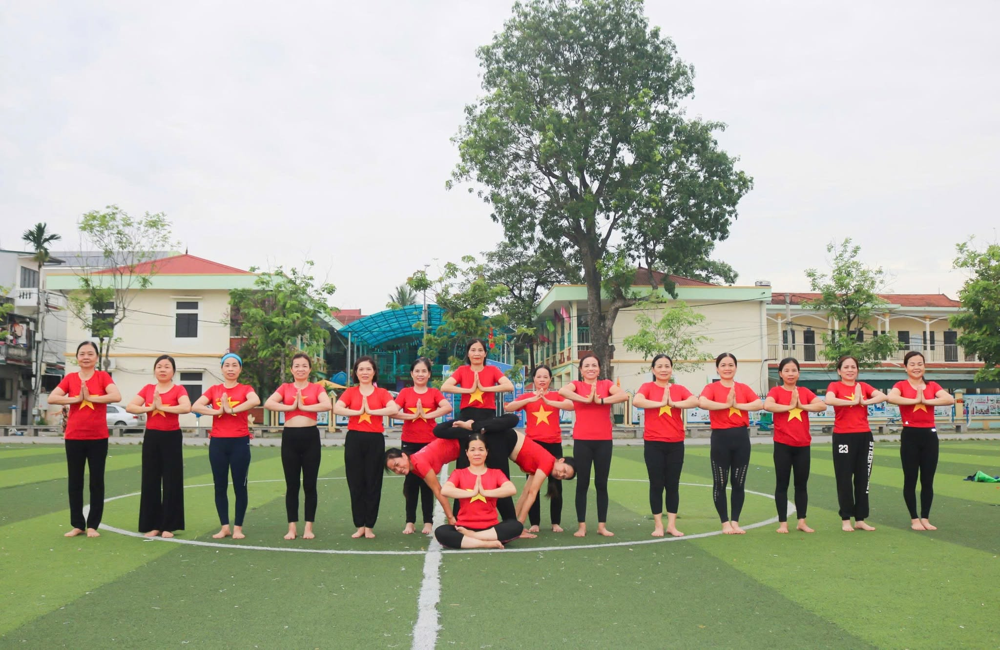

Từ Hạt Cơm Hạt Ngô Sơn Trung Đến Giảng Đường Đại Học Y Hà Nội
Gia đình nông nghiệp nghèo khó và 6 anh chị em đứng Top đầu trường
Chị Hoa sinh ra trong một gia đình thuần nông nghèo khó ở vùng nông thôn Sơn Trung – Quốc Oai. Gia đình có tới 6 anh chị em, bố mẹ làm nông nghiệp vất vả quanh năm, tuy rất nghèo nhưng vẫn chắt chiu từng hạt cơm, hạt ngô để nuôi các con ăn học.
Thương bố mẹ tần tảo, 6 anh chị em trong nhà không ai bảo ai đều tự giác học thật giỏi, luôn đứng hạng Top có tiếng của trường và trưởng thành vững vàng:
Biến cố mất cha năm thứ 5 Đại học Y Hà Nội & Khát khao cứu người
Từ nhỏ chị Hoa rất thích học các môn Tự nhiên, không thích các môn Xã hội nhưng vẫn nỗ lực đạt học sinh xuất sắc toàn diện nhiều năm liền. Cấp 3, chị được định hướng thi đỗ vào Đại học Y Hà Nội với khát khao cháy bỏng là cứu chữa người bệnh.
Biến cố lớn nhất ập đến khi chị đang học năm thứ 5 Đại học Y: Bố chị qua đời vì căn bệnh ung thư do bệnh quá nặng và gia đình lúc ấy quá nghèo. Nỗi đau mất cha trở thành lời thề khắc cốt ghi tâm: "Cả cuộc đời này mình phải tận tâm cứu người và trao đi giọt máu, trao đi sự sống cho bệnh nhân!"

Minh Chứng Sống Động Cho Khát Vọng Cứu Người
Từ nỗi đau mất cha vì bệnh ung thư năm thứ 5 Đại học Y đến nụ cười rạng rỡ khi trao giọt máu hồng ngày 07/02/2026: Trái tim người thầy thuốc chưa bao giờ ngừng đập vì cộng đồng.
3 Chặng Đường Vàng Trong Màu Áo Blouse Trắng
 Hơn 30 Năm Y Đức
Hơn 30 Năm Y Đức
Thầy Thuốc Như Mẹ Hiền
Dù ở Khoa Nhi, nơi đầu sóng ngọn gió HSCC hay Khoa Tim mạch Lão học, nụ cười nhân hậu của BS. Hoa luôn là điểm tựa tinh thần cho người bệnh.
Công Tác Tại Khoa Nhi
Ra trường khoác lên mình chiếc áo Blouse trắng, chị dành trọn 10 năm đầu tiên chăm sóc, điều trị cho các bệnh nhi nhỏ tuổi bằng tất cả tình yêu thương và sự tận tụy.
Học Chuyên Khoa I & Làm Lãnh Đạo Khoa Hồi Sức Cấp Cứu (HSCC)
Không ngừng nâng cao trình độ, chị theo học Chuyên khoa I HSCC và đảm nhiệm cương vị Lãnh đạo khoa HSCC suốt 10 năm – trực tiếp chỉ huy và giành giật sự sống cho hàng ngàn ca bệnh nguy kịch.
Công Tác Tại Khoa Tim Mạch Lão Học & Nghỉ Hưu Cách Đây 2 Năm
Những năm tháng còn lại trước khi nghỉ hưu (cách đây 2 năm), chị tận tâm chăm sóc các bệnh nhân cao tuổi tại Khoa Tim mạch Lão học, đồng thời duy trì Phòng khám Bác sĩ Hoa phục vụ nhân dân.
Khi Bác Sĩ Nghỉ Hưu Làm Bạn Với AI & Khai Mở Cuộc Đời Mới

Học Từ Những Người Thầy Xuất Sắc & Tử Tế
Khoảnh khắc đẹp của chị Hoa cùng người Thầy dẫn đường. Nhờ những người thầy có phương pháp giảng dạy cuốn hút như thầy Trần Khánh Tự và thầy Tuấn Tử Tế, chị đã mở ra một chương đời mới rực rỡ.
Lộ Trình Học Tập Không Ngơi Nghỉ Từ 2024 Đến Nay
Học Viện Dinh Dưỡng Nutrime
Với mong muốn có kiến thức chuyên sâu về dinh dưỡng để giúp mọi người khỏe từ gốc, chị tham gia các khóa khoa học dinh dưỡng của Học viện Nutrime.
Khóa Học Super AI & Lớp CMA Của Thầy Trần Khánh Tự
Tháng 5/2025 nhận thấy kiến thức AI vô cùng thú vị, đến tháng 10/2025 chị bắt gặp các trang chia sẻ AI đặc biệt của thầy Trần Khánh Tự. Chị lập tức đăng ký học Super AI và tiếp tục học lên lớp CMA.
Học Cùng Thầy Tuấn Tử Tế: Kiến Xây Đời Mới, Đời Mới XAI & Kiến Tạo Cuộc Sống XAI
Không chỉ học công cụ AI, qua các lớp phát triển bản thân của thầy Tuấn Tử Tế và các thầy cô, chị được học tư duy về rất nhiều lĩnh vực khác nhau, nhận ra biết bao điều thú vị xung quanh giúp cuộc sống dễ dàng hơn, hạnh phúc hơn và vui vẻ hơn mỗi ngày!
6 Đột Phá Kỳ Diệu Khi Giao Tiếp Với AI Thân Thiện Như Người Bạn:
Rèn Luyện Thân – Tâm – Trí: Chạy Marathon, Tập Yoga & Tỏa Sáng

Chinh Phục Đường Dài Marathon & Đồng Diễn Yoga
Nhờ môi trường học tập và rèn luyện kỷ luật Thân – Tâm – Trí, chị Hoa đã làm được những điều mà trước đây chưa từng nghĩ tới: biết chạy đường dài, chạy Marathon bền bỉ, mỗi sáng cùng đồng đội tập Yoga trong sắc áo đỏ sao vàng, tràn đầy sức sống và sự tự tin.

Tỏa Sáng Dịu Dàng Tại Kênh Gà
Khi tâm an vui và trí tuệ khai mở, vẻ đẹp bên ngoài cũng bừng sáng. Hình ảnh chị Hoa duyên dáng tạo dáng trái tim trong tà áo dài xanh tại Kênh Gà cùng các chị em là minh chứng cho một cuộc sống hạnh phúc, trẻ trung ở tuổi nghỉ hưu.
Đi Để Học, Để Hiểu Biết, Để Tự Hào, Để Biết Ơn & Phát Triển

Từ Phòng Học Zoom Đến Đỉnh Hoàng Sơn Quan Lịch Sử
Không chỉ dừng lại ở những buổi học trực tuyến trên Zoom, chị Hoa đã có những chuyến đi thực tế vô cùng tuyệt vời dọc chiều dài đất nước. Đứng dưới cổng thành cổ kính của Hoàng Sơn Quan trong sắc áo đỏ sao vàng, mỗi thành viên đều trào dâng niềm tự hào dân tộc và lòng biết ơn sâu sắc đối với tổ tiên.
.jpg) Ảnh #07: ninh bình (2).jpg
Ảnh #07: ninh bình (2).jpg
Vẫy Chào Ngày Mới Rạng Rỡ
Chị Hoa (áo cam) giơ tay vẫy chào tràn đầy sức trẻ cùng thầy và những người bạn đồng hành dưới chân núi Ninh Bình.
 Ảnh #08: ninh bình.jpg
Ảnh #08: ninh bình.jpg
Sắc Đỏ Tự Hào Việt Nam
Gắn kết yêu thương bên người thầy và đồng đội với chiếc quạt đỏ in hình Ngôi sao vàng Tổ quốc.
 Ảnh #09: ninh bình 2.jpg
Ảnh #09: ninh bình 2.jpg
Hành Trình Về Nguồn Cội
Đi để lắng nghe hơi thở lịch sử dưới mái chùa, mái đình cổ kính và thêm yêu văn hóa dân tộc.
 Ảnh #10: ninh bình 3.jpg
Ảnh #10: ninh bình 3.jpg
Giữa Non Nước Hùng Vĩ
Thả tim trên cây cầu đá giữa trùng điệp núi non – minh chứng cho một cộng đồng cùng học tập và phát triển.
Đại Sảnh Trọn Bộ 10 Bức Ảnh Hành Trình Của BS. Nguyễn Thị Hoa
Tất cả 10 bức ảnh dưới đây đã được gắn chính xác tên file gốc để khi chị tải lên GitHub Pages là hiển thị tự động 100%.
1. bs Hoa.jpg
2. hiến máu.jpg
3. thây tro.jpg

4. yoga.jpg
5. kenh ga.jpg
6. hoàng sơn quan.jpg
7. ninh bình (2).jpg
8. ninh bình.jpg
9. ninh bình 2.jpg
10. ninh bình 3.jpg
Ôn Tập Tương Tác & Đúc Kết Bài Học Truyền Cảm Hứng
Dành cho anh chị em học viên: Hãy lật mở 6 thẻ bài học cốt lõi, trả lời 5 câu hỏi trắc nghiệm và lưu lại cam kết hành động của chính mình!
1. Bộ 6 Thẻ Lật 3D Đúc Kết Từ Cuộc Đời BS. Hoa (Chạm Để Lật)
Vượt Qua Nghịch Cảnh
Chạm để lật xem chi tiết
Từ Hạt Ngô Nghèo Sơn Trung
Bố mẹ nghèo chắt chiu từng hạt cơm hạt ngô nhưng cả 6 anh chị em đều tự giác học giỏi đứng Top đầu trường (Giáo viên, Bộ đội, Kỹ sư Hàng không, Bác sĩ).
Chuyển Hóa Nỗi Đau
Chạm để lật xem chi tiết
Lời Thề Năm Thứ 5 Đại Học Y
Biến nỗi đau mất bố vì bệnh ung thư trong cảnh nghèo khó thành động lực hơn 30 năm cứu người ở Khoa Nhi, Khoa HSCC và Tim mạch Lão học.
Học Tập Suốt Đời
Chạm để lật xem chi tiết
Không Ngừng Mở Rộng Tri Thức
Nghỉ hưu không phải dừng lại: Năm 2024 học Dinh dưỡng Nutrime; năm 2025 học Super AI, CMA (thầy Trần Khánh Tự) và Đời Mới XAI (thầy Tuấn Tử Tế).
Làm Bạn Cùng AI
Chạm để lật xem chi tiết
Tự Tin Sáng Tạo Đa Kênh
Trò chuyện với AI thân thiện như bạn bè, tự tin Livestream FB, làm YouTube, tạo ảnh/video/phim tự động, sáng tác nhạc và lập trình Website GitHub.
Kỷ Luật Thân – Tâm – Trí
Chạm để lật xem chi tiết
Marathon & Yoga Mỗi Ngày
Rèn luyện tính kỷ luật bản thân qua bước chạy đường dài Marathon và những buổi đồng diễn Yoga tràn đầy năng lượng cùng cộng đồng.
5 Giá Trị Của Những Chuyến Đi
Chạm để lật xem chi tiết
Từ Nam Ra Bắc
Đến những địa danh lịch sử dọc chiều dài đất nước: Đi để học, đi để hiểu biết, đi để tự hào, đi để biết ơn và đi để phát triển.
2. Trắc Nghiệm Ôn Tập Bài Giảng (5 Câu Hỏi)
Kiểm tra nhanh những dấu ấn truyền cảm hứng trong câu chuyện cuộc đời BS. Nguyễn Thị Hoa.
3. Sổ Tay Suy Ngẫm & Thực Hành Theo Tấm Gương BS. Hoa
Hãy viết lại cảm nhận và kế hoạch hành động của bạn ngay bên dưới (Tự động lưu trên trình duyệt của bạn):
Kết Nối Cùng Bác Sĩ Nguyễn Thị Hoa
Theo dõi kênh YouTube âm nhạc & video AI, các trang Facebook chia sẻ kiến thức và kho GitHub của chị Hoa:
3 Bước Để Hiển Thị Cả Bài Giảng & 10 Bức Ảnh Trên Website
-
Bước 1: Bấm nút "Xem & Copy Mã Nguồn HTML" bên dưới để lưu thành file
index.htmltrên máy tính. - Bước 2: Mở kho GitHub blogcanhan.github.io, chọn Add file → Upload files.
-
Bước 3: Tải file
index.htmlcùng đủ 10 file ảnh gốc (bs Hoa.jpg, hiến máu.jpg, thây tro.jpg, yoga.jpg, kenh ga.jpg, hoàng sơn quan.jpg, ninh bình.jpg, ninh bình (2).jpg, ninh bình 2.jpg, ninh bình 3.jpg) lên rồi bấm Commit changes.